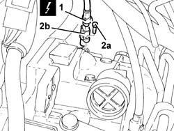

2135B74 electronic automatic transmission output rpm sensor - r r
- Path
- Procedures > 21 GEARBOX > 2135 AUTOMATIC TRANSMISSION EXTERNAL CONTROLS > 2135B automatic transmission electrical controls > 2135B74 electronic automatic transmission output rpm sensor - r r
- Kind
- repair procedure (removal / refitting; the operation number is the code)
- Applies to
- engines: 2.5 V6; all production periods
- Interactive page
- https://sloeber94.github.io/elrnDB-a156/en/#/3238012
Applies to: engines: 2.5 V6; all production periods; only with equipment: Q-System
 Removing
Removing
 Refitting
Refitting5530B52 Battery DRIP TRAY/SUPPORT - R.R.
1. Disconnect the electrical connection from the electronic automatic transmission output rpm sensor.
 | Name | Connector |
|---|---|---|
1 | Transmission output speed sensor |
2. Undo the bolts (2a) and remove the automatic transmission output rpm sensor (2b).

Applies to: engines: 2.5 V6; all production periods; only with equipment: Q-System
Refitting
RemovingRefit in its seating the automatic gearbox output rpm sensor and tighten the bolt to the specified torque.
 | Fastening | Component | Ø | Value (daNm) |
|---|---|---|---|---|
- | - | AUTONATIC TRANS.INPUT RPM SENSOR | - | (Automatic transmission side) |
Connect the eletrical connection to the automatic transmission output rpm sensor.